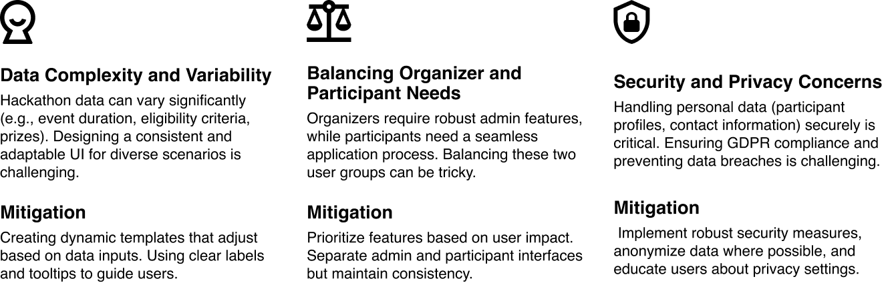

Role
User Experience (UX) Designer
Timeline
5 Weeks
Process
UX Research, Prototyping, User Testing, Visual Design
Project
Enhancing Accessibility and Participation in Hackathons
Context
Hackathons are dynamic events that foster innovation, collaboration, and skill development. However, the current landscape presents challenges for both organizers and participants:
- Fragmented Information: Hackathon details are scattered across various platforms, making it difficult for potential participants to discover relevant events.
- Geographical Constraints: Many hackathons are location-specific, limiting participation opportunities for individuals who cannot attend in person.
- Organizer Burden: Organizers struggle to efficiently manage event information, applications, and communication channels.
About HackWave
HackWave connects a vibrant community of tech enthusiasts, students, and professionals to diverse hackathons. It’s a platform for sharpening skills and fostering innovation across various niches like coding and hardware.
The platform accommodates both virtual and on-site participants, offering a
dynamic space for creatives and tech minds to engage in challenges and
showcase their talents in a collaborative environment.🚀
How do I measure Success
In the future, further testing should be conducted to collect more quantitative and qualitative metrics. Post-launch metrics could also be analyzed to measure business outcomes.
Measuring User Experience Success
Measuring Positive Business Outcomes
Research
User Research
I’ve conducted two rounds of user research interviews with 6 participants and 2 organizers with varying backgrounds in usages of the portal. The key pain points of the portal are determined, focusing on the ability to keep up with timeline of hackathons.
Insights
Market Research
I looked into other hackathon platforms. Based on user research, HackWave users often uses these other applications.
Analysing Research
After gathering requirements and information, I synthesized them into meaningful insights and categorized my research into different sections.
I combined the data from my user and market research to identified a problem to focus on:
Lack of consistency in hackathon search.
Problem Statement Summary:
How might we create a centralized platform that streamlines hackathon discovery, facilitates remote participation, and eases the administrative burden for organizers?
Possible Solution
HackWave is an all-in-one web portal designed to address the pain points faced by both organizers and participants. Here’s how it works:
User Flow
Hi-Fidelity Design


Edge Cases
I thought of some edge cases that could be further explored beyond the scope of this project.
Future Scope
There are some future scope that could be further explored beyond the scope of this project to enhance the portal and make it more scalable.
Takeaways
In the future, further testing should be conducted to collect more quantitative and qualitative metrics. Post-launch metrics could also be analyzed to measure business outcomes.
Key Learnings
Challenges Faced
Go back to work🙂. Sorry My work